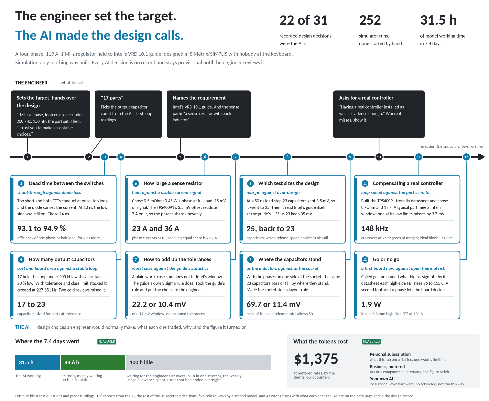

A synchronous buck regulator for a processor core rail, 12 V in, VID 1.4 V on a 1.00 mOhm load line, four phases at 1 MHz each. It is held to Intel's VRD 10.1 design guide, document 302356-004, configuration 775_VR_CONFIG_04B, line by line, and to two rules the engineer set: 1 MHz a phase, and loop crossover under 200 kHz.
Two hundred and fifty-two simulator runs, each graded against a prediction written and sealed before the deck that tests it existed. Twenty-two of the thirty-one recorded design decisions were made by the AI, by the engineer's written delegation. Forty-one wrong turns are on the record below with what each one changed.
Every reading on this page was predicted in a file that was sealed before its deck existed, and a script graded the run against the seal. That is what makes a failed prediction reportable, and there are failed predictions below, including one where the engineer was told to expect a miss and the design met the line.
A 2004 doctoral dissertation on multiphase voltage-regulator design, public and citable. A published Intel design guide for the requirement. Catalogue parts with their makers' simulation models. One commercial circuit simulator, SIMetrix/SIMPLIS, stock install, on one machine. No client material of any kind is involved in this case, and none of the work was done on anyone's equipment but ours.
The source is K. Yao's dissertation at Virginia Tech. Its own chapter 3 carries three designs, at 25 A and 50 A on two phases and 90 A on four. This design carries 119 A on four phases at 1 MHz and is held to a named requirement the source designs were not.
Read the tags.
SIMULATED a reading taken in SIMetrix/SIMPLIS against a prediction sealed before the deck existed, named by its deck and the first eight characters of its receipt hash.
MEASURED on this page means read off the machines themselves: clocks, the queue log, the clients' own cost counters.
DOCUMENTED from a published source, the Intel guide, a part datasheet or the dissertation. DERIVED arithmetic on those, with the inputs named.
NOT EVALUABLE a check that could not decide. It is never promoted to a pass because the answer looks plausible.
Four figures, and the misses beside them at the same size.
| Reading | Result | Receipt |
|---|---|---|
| Intel's load step, 24 A to 119 A in 1.25 us, lowest point against the bottom of Intel's window | 10.7 mV over | spike275 (df0aecb2) |
| Release, 100 A to 5 A at 1,900 A/us, peak against the zero-current level, limit +50 mV | +47.8 mV | spike277 (18facfc2) |
| Loop crossover at 119 A, the engineer's rule being under 200,000 Hz | 148,162 Hz, 75.2 deg | spike278 (6dc56243) |
| Simulator runs behind the design, none started by hand | 252, 43.5 h | the queue log |
SIMULATED for the first three, MEASURED for the run count.
| Reading | Result | Receipt |
|---|---|---|
| The same load step with the controller's reference at its 1 % low limit and no trim on the board | 3.7 mV under Intel's window | spike280 (37a74708) |
| Phase currents at 119 A with sense offsets of 3.5 mV on alternate phases, an even share being 29.7 A | 23.1 and 36.4 A; 40.5 A peak | spike281 (7b3aabc7) |
| Pulses in 50 periods at VID 0.8375 V and 13.8 V in, with the part's minimum on-time at its 100 ns maximum | 40, 40, 38, 39 of 50; ripple 4.3 mV where 5.0 is allowed | spike286 (c8ec6405) |
| Change of VID with this controller | no VID input; a DAC outside the part, not simulated | none |
| The AC analysis of the loop at 24 A | the simulator refused the deck; read from a transient instead, 156,310 Hz at 80.3 deg | spike279, then spike283 (f7afa0a8) |
SIMULATED for the first three, NOT EVALUABLE for the last two, the loop at 24 A then read by another route.
The trim is therefore a requirement with this part, not an option. That is the design's own conclusion, and it is in the specification as a condition on the board.
The dissertation's three designs beside this one. The full table is section 13 of the electrical specification in the archive.
| Two-phase hardware | Two-phase ceramic, simulated | Four-phase demonstration board | This design | |
|---|---|---|---|---|
| Output | 1.5 V | 1.5 V | 1.3 V | VID 1.4 V, 0.8375 to 1.6 V while running |
| Maximum current | 25 A | 50 A | 90 A | 119 A |
| Phases | 2 | 2 | 4 | 4 |
| Switching frequency | 300 kHz | 1 MHz | not stated | 1 MHz |
| Output capacitors | 4 x 820 uF Oscon | 8 x 100 uF ceramic | 10 x 100 uF ceramic | 23 x 100 uF ceramic |
| Loop crossover | about 16 kHz | 130 kHz | 220 kHz measured, 80 deg | 148,162 Hz at 75.2 deg |
| Requirement it is held to | none named | none named | none named | Intel VRD 10.1, 775_VR_CONFIG_04B, line by line |
| Evidence | measured on a board | simulated | measured on a board | simulated; 252 graded runs, every one against a sealed prediction |
DOCUMENTED for the first three columns, from chapter 3 of the dissertation. SIMULATED for the fourth.
A real controller is in the design, the TPS40091, with TPS28225 drivers. It is carried in the decks as a network built from its datasheet, SLUS578B, and that network was checked first on a case with a known answer (spike274, 38f16bd7). Where the part falls short of what the design asks, the page shows the shortfall rather than changing the design around it.
| Line | Typical part | At its datasheet limit | Receipts |
|---|---|---|---|
| Intel's step, lowest point against the bottom of the window | 10.7 mV over | 3.7 mV under, reference 1 % low, no trim | spike275 (df0aecb2), spike280 (37a74708) |
| Release at 76 A/us, peak against the zero-current level, limit +50 mV | +23.8 mV | not read | spike276 (1bc481e6) |
| Release at 1,900 A/us | +47.8 mV | +47.8 mV with the ramp and the sense gain at their limits | spike277 (18facfc2), spike284 (d866f705) |
| Loop crossover at 119 A, rule under 200,000 Hz | 148,162 Hz, 75.2 deg | not read | spike278 (6dc56243) |
| Loop crossover at 24 A, read from a transient | 156,310 Hz, 80.3 deg | not read | spike283 (f7afa0a8) |
| Phase currents at 119 A, an even share being 29.7 A | alike | 23.1 and 36.4 A with sense offsets of 3.5 mV | spike281 (7b3aabc7) |
| Pulses at VID 0.8375 V and 13.8 V in | 50 of 50 in each phase | 38 to 40 of 50 at a 100 ns minimum on-time; ripple 4.3 mV peak where 5.0 is allowed | spike285 (64d18433), spike286 (c8ec6405) |
| Change of VID | the part has no VID input | a DAC outside the part, not simulated | none |
All SIMULATED except the last line, which is NOT EVALUABLE.
The decks carried an ideal modulator until October 4. Against it the same step keeps 17.7 mV instead of 10.7, and the releases peak +14.8 mV and +46.5 mV instead of +23.8 and +47.8 (spike242, spike241, spike216). The difference is what a real part costs on this stage, and it is published rather than averaged away.
| Feature this part lacks | What it costs here | What the feature would buy |
|---|---|---|
| VID input with changes on the fly | a DAC and its accuracy outside the part, not simulated | Intel's change of VID with one part |
| A reference good to 0.5 % | 3.7 mV under the window on Intel's step at the reference's limit | the step inside the window with no trim |
| Sense offset of 100 uV, or a larger sense signal | phases 6.7 A over their share at full load, 40.5 A peak | the phases within an ampere of each other |
| A droop that follows the load without an integrating amplifier's lag | 6.6 mV of undershoot, and the margin on the step down from 17.7 to 10.7 mV | the ideal block's figures |
| A minimum on-time of 50 ns at its worst | at VID 0.8375 V and 13.8 V in, a part at its limit skips about a fifth of its pulses | the whole VID range across the whole input range |
| A stated spread on the droop gain | not known, so the load line budget cannot be closed | a budget that closes |
| A simulation model from the maker | this network, built from the datasheet and checked on a known answer | the part's clamps, its balance loop and its protections in the decks |
What the part does give: four phases to 1.2 MHz, a programmable load line from the summed phase currents, differential remote sense, three-state outputs for the driver already chosen, the protections, and a part that can still be bought. The other controllers of its generation that were looked at are obsolete. DOCUMENTED from SLUS578B.

Nobody sat at the simulator. Scheduled tasks on one machine took jobs from a queue, ran them and wrote receipts. The chat wrote the decks, sealed the prediction for each one before it ran, read the receipts and reported. The engineer's part was about eighteen messages in eight days.
| Figure | Value | Tag | How it was counted |
|---|---|---|---|
| Calendar time, first step to the finished documents | 7.4 days | MEASURED | the session's start time and the folder's last write |
| Model working time | 31.5 hours | MEASURED | the chat's own counter, retries left out, sub-agents included |
| Tool time | 44.6 hours | MEASURED | the same counters: scripts, file transfers, and waiting on the simulator |
| Share of tool time spent waiting on the simulator | 78 % | MEASURED on the last 2.2 hours only | the earlier record is compacted and cannot be split |
| Working time, model time plus tool time that was not waiting | about 41 hours | ESTIMATE bounded at 31.5 and 76.5 | 31.5 h plus 22 % of 44.6 h |
| Simulator runs | 252 runs, 43.5 hours | MEASURED | start and end of every run in the queue log |
| Grading jobs | 115 by script, 144 by agents before that | MEASURED | the queue log |
| Reports from the AI to the engineer | 138 | MEASURED | the message files |
| Messages from the engineer | about 18 | ESTIMATE | four set the requirement or the design and are on the picture; the rest were status questions, process rulings and short answers |
| Idle time | 100 hours of the 176.5 | MEASURED | calendar time less model time and tool time |
The idle time has reasons on the record and they are worth more than the number. Sixty-one hours in one stretch were spent waiting for an answer with nothing queued behind it, which is a defect of the automation and is logged as one. Some of it was the weekly usage allowance running out. Some of it was turns that had ended overnight.
There is no speed multiplier on this page and there will not be one. No engineer designed the same regulator by hand beside this, so there is nothing to divide by.
at metered rates. MEASURED from the clients' own cost counters: 1,192 for the design chat and its sub-agents, 183 for 211 agent jobs on the machine.
That one figure means three different things depending on how a team runs it, and all three belong on the page.
On a personal subscription, which is what the work ran on, it is a flat monthly price. The allowance ran out once on record, when eighteen agent jobs came back against the weekly limit and grading moved to scripts with no agent for the rest of that day.
At metered rates, $1,375 is what the same tokens cost. That is the basis a company pays on through the API or its own cloud tenancy, which are tiers 2 and 3 of the offering.
On a team's own hardware with a local model, tier 1, there is no token fee at all, and the cost is the hardware. The caveat has to travel with that sentence: this design was run on a frontier model, and no local model has been shown to do it. What the open-weight models have been shown to do, and what they cost in cards, is on the Metrics page.
The engineer set the target and handed over the design. He fixed the frequency, the inductance, the part set, the requirement and the controller, and he ruled whenever he was asked. Between those decisions the AI made twenty-two of the thirty-one design calls on record, because he said so in writing: "I trust you to make acceptable choices." He added that a second model would review the result cold at the end.
So the home page's sentence needs reading precisely here. He decided what to delegate, and he decides whether what came back is acceptable. Nothing on this page is signed off. The design review's verdict is to go to a first board, and its open calls are his: the capacitor count against release speed, one side of the socket or two, one high-side FET a phase or two, the trim, the sense offset, and a DAC for VID.
What this case shows is narrower and more useful than a claim that the AI designed a regulator. It shows how far design work can be handed over before the checks stop being able to tell you whether the result is right. On this design the checks held. Five cold reviews by a second model that saw only a packet each, and 252 runs graded against sealed predictions, turned up forty-one wrong turns, one of which was a load line centred on the wrong deck.
Every one of those twenty-two decisions is on the path page in the archive with what it traded, why, and the figure it turned on.
This is the longest section on the page, and that is the point of it. Forty-one wrong turns are on the record with what each one changed, thirty-four on the path page and seven more in the controller specification, both in the archive. The numbered-defect record reaches 609.
Each entry below gives the failure, then why nothing flagged it at the time, then the check that catches it. The checks are the thing being sold. They are what the fourth week of an engagement installs.
These are the five mechanisms that caught the entries above, and they are what the fourth week of an engagement installs in a customer's own flow.
The verification discipline that the automation made cheap enough to run every time is what surfaced these. The engineer judged them.
The datasheet opens here. The archive and the deck go out by email on request.
206 files, 8.1 MB. Nineteen SIMetrix/SIMPLIS decks with the prediction sealed for each, their checkers, schematics, netlists and receipts. Nineteen figures. The documents beside this one. A README and a manifest of SHA-256 sums.
DOWNLOAD_4PH_1MHZ_DESIGN_2026-10-05.zip, sha256 0a344d5e
Four phases, 1 MHz, 119 A on a 1.00 mOhm load line, held to Intel's VRD 10.1 in simulation. One page.
DATASHEET_4PH_1MHZ_2026-10-04.pdf, 248 kB, sha256 8a5b1b87
63 slides. Verdict, twelve findings, the open calls, and a controller section.
DESIGN_REVIEW_4PH_1MHZ_2026-10-04.pptx, 2.4 MB, sha256 fdd06046
What the archive is, stated plainly so nobody asks for it expecting something else. These decks ran on one machine under SIMetrix/SIMPLIS 8.40i. The device makers' model files are left out, and the README names where each one comes from. Running the decks on another machine has not been tried.
What the record will support is this. A requirement was taken from a published guide and held line by line. The design choices were delegated on purpose and are all on record. The checks found forty-one things wrong, and the engineer ruled on what they meant.
Book a scoping conversationK. Yao, "High-Frequency and High-Performance VRM Design for the Next Generations of Processors", PhD dissertation, Virginia Polytechnic Institute and State University, April 2004, chapter 3.
Intel Voltage Regulator-Down (VRD) 10.1 Design Guide, document 302356-004, configuration 775_VR_CONFIG_04B.
Texas Instruments TPS40091 datasheet SLUS578B; TPS28225 datasheet. Simulations in SIMetrix/SIMPLIS 8.40i.
Every figure on this page traces to a receipt named by its deck and the first eight characters of its hash. The full record is DESIGN_RECORD_4PH_1MHZ_2026-10-01.md, edition 16, in the archive.